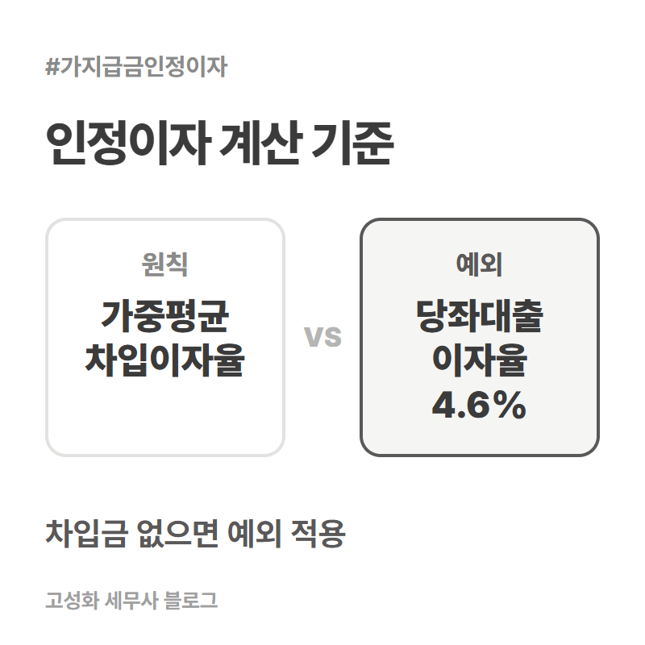
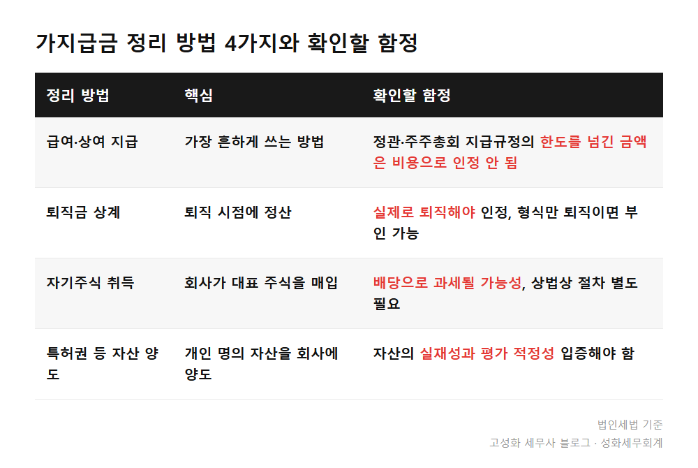

법인 가지급금 인정이자 4.6%, 상여로 처리됩니다

결산 자료를 들고 오신 법인 대표님들 중에는, 재무제표에 찍힌 가지급금 잔액을 보고 "이게 왜 이렇게 쌓였죠" 하고 되물으시는 분이 적지 않습니다.
법인 통장에서 개인 용도로 돈을 쓰고 증빙을 못 챙긴 지출이 매년 조금씩 쌓이다 보면, 어느 순간 금액이 꽤 커져 있습니다.
당장 회사 돈이 나간 것뿐인데 왜 세금 문제가 되는지, 그 구조부터 짚어보겠습니다.
이 글을 보고 계신 분은 아마 셋 중 하나이실 겁니다.
- 가지급금, 왜 이자가 붙을까
- 이자만 내면 끝이 아닙니다
- 정리 방법은 네 가지, 각각 함정이 있습니다
한눈에 보기


자주 묻는 질문
가지급금이 적으면 그냥 둬도 되나요?
금액이 작아도 매년 이자가 붙고 잔액이 쌓이는 구조라, 시간이 지날수록 부담이 커집니다. 지금은 크지 않더라도 언제부터 쌓였는지 먼저 점검해보시길 권합니다.
인정이자를 법인이 직접 받으면 문제가 없나요?
네, 법인이 실제로 이자를 받아 수익으로 처리하면 상여 처분 문제는 생기지 않습니다. 다만 지급이자 손금불산입 문제는 가지급금 원금이 남아있는 한 별도로 남습니다.
4.6퍼센트는 모든 법인에 똑같이 적용되나요?
아닙니다. 은행 등에서 실제로 돈을 빌린 법인은 그 차입금의 가중평균이자율이 우선 적용됩니다. 당좌대출이자율 4.6퍼센트는 차입금이 없거나 가중평균이자율을 계산하기 어려운 경우에 쓰는 예외적인 기준입니다.
정리하면
가지급금은 액수보다 언제부터, 왜 쌓였는지를 먼저 봐야 합니다. 인정이자와 손금불산입, 정리 시점의 방법 선택까지 한 번에 얽혀 있어서, 순서를 잘못 잡으면 오히려 세금 부담이 늘어나는 경우도 있습니다.
사소한 금액이라 넘기신 경우도 많이 봤는데, 오히려 이런 게 몇 년 뒤에 크게 불어나 있는 걸 보게 됩니다.
지금 재무제표에 가지급금이 잡혀 있다면, 금액과 발생 시점부터 같이 확인해보시죠. 어떤 방법이 나은지는 회사 상황을 봐야 정확합니다.
본문 전체와 근거 조문은 블로그에서 확인하실 수 있습니다.